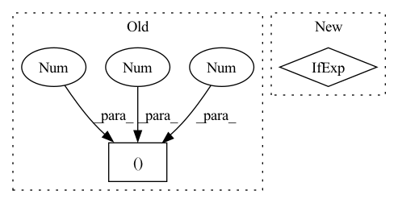

Pattern ID :1473
Before Change
self.lsnr_net = LSNRNet(p.conv_ch * 2, lsnr_min=p.lsnr_min, lsnr_max=p.lsnr_max)
// SNR offsets on which each refinement layer is activated
self.refinement_snr_min = -10
self.refinement_snr_max = (100, 10, 5, 0, -5, -5, -5, -5 )
// Add a bunch of "-5" SNRs to support currently a maximum of 8 refinement layers.
assert len(self.stages) <= 8
After Change
depth=p.refinement_depth,
fstrides=strides,
)
self.refinement_op = ComplexMul() if p.refinement_op == "mul" else ComplexAdd()
self.lsnr_net = LSNRNet(self.erb_stage.max_width, lsnr_min=p.lsnr_min, lsnr_max=p.lsnr_max)
def forward(In pattern: SUPERPATTERN
Frequency: 3
Non-data size: 2
Instances Fragment ID: 4158719
Project Name: rikorose/deepfilternet
Commit Name: 946b362aa406f8a1808a252393351d0e7523130a
Time: 2022-04-12
Author: h.schroeter@pm.me
File Name: DeepFilterNet/df/multistagenet.py
M Class Name: MSNet
N Class Name: MSNet
M Method Name: __init__(3)
N Method Name: __init__(3)
M Parent Class: nn.Module
N Parent Class: nn.Module
M File Name: DeepFilterNet/df/multistagenet.py
N File Name: DeepFilterNet/df/multistagenet.py
M Start Line: 480
M End Line: 525
N Start Line: 455
N End Line: 492
Before Change
self.apply_act = apply_act // apply activation (non-linearity)
self.momentum = momentum
self.eps = eps
param_shape = (1 , num_features, 1, 1 )
self.weight = nn.Parameter(torch.ones(param_shape), requires_grad=True)
self.bias = nn.Parameter(torch.zeros(param_shape), requires_grad=True)
if apply_act:After Change
self.eps = eps
self.weight = nn.Parameter(torch.ones(num_features), requires_grad=True)
self.bias = nn.Parameter(torch.zeros(num_features), requires_grad=True)
self.v = nn.Parameter(torch.ones(num_features), requires_grad=True) if apply_act else None
self.register_buffer("running_var", torch.ones(num_features))
self.reset_parameters()
Fragment ID: 4159359
Project Name: feng-lab/pytorch-image-models
Commit Name: 93cc08fdc5a3f6716c183150b8370621788a13f0
Time: 2021-11-20
Author: rwightman@gmail.com
File Name: timm/models/layers/evo_norm.py
M Class Name: EvoNormBatch2d
N Class Name: EvoNormBatch2d
M Method Name: __init__(6)
N Method Name: __init__(6)
M Parent Class: nn.Module
N Parent Class: nn.Module
M File Name: timm/models/layers/evo_norm.py
N File Name: timm/models/layers/evo_norm.py
M Start Line: 24
M End Line: 29
N Start Line: 24
N End Line: 27
Before Change
self.apply_act = apply_act // apply activation (non-linearity)
self.groups = groups
self.eps = eps
param_shape = (1 , num_features, 1, 1 )
self.weight = nn.Parameter(torch.ones(param_shape), requires_grad=True)
self.bias = nn.Parameter(torch.zeros(param_shape), requires_grad=True)
if apply_act:After Change
self.eps = eps
self.weight = nn.Parameter(torch.ones(num_features), requires_grad=True)
self.bias = nn.Parameter(torch.zeros(num_features), requires_grad=True)
self.v = nn.Parameter(torch.ones(num_features), requires_grad=True) if apply_act else None
self.reset_parameters()
def reset_parameters(self): Fragment ID: 4159357
Project Name: feng-lab/pytorch-image-models
Commit Name: 93cc08fdc5a3f6716c183150b8370621788a13f0
Time: 2021-11-20
Author: rwightman@gmail.com
File Name: timm/models/layers/evo_norm.py
M Class Name: EvoNormSample2d
N Class Name: EvoNormSample2d
M Method Name: __init__(6)
N Method Name: __init__(6)
M Parent Class: nn.Module
N Parent Class: nn.Module
M File Name: timm/models/layers/evo_norm.py
N File Name: timm/models/layers/evo_norm.py
M Start Line: 63
M End Line: 68
N Start Line: 64
N End Line: 64